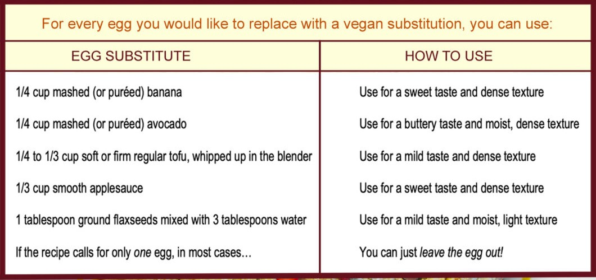

Recipe Inspiration
A few of my favorite vegan recipe blogs that helped shape this recipe.
Baking & Substitutes
Some other helpful information about baking and vegan substitutions:
Vegan Substitutes for Baking and Cooking
A few of my favorite vegan recipe blogs that helped shape this recipe.
Some other helpful information about baking and vegan substitutions:
Vegan Substitutes for Baking and Cooking